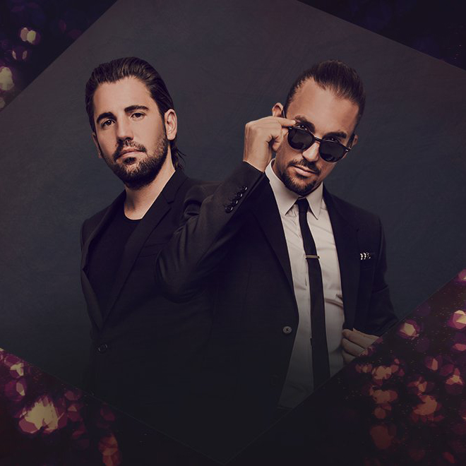
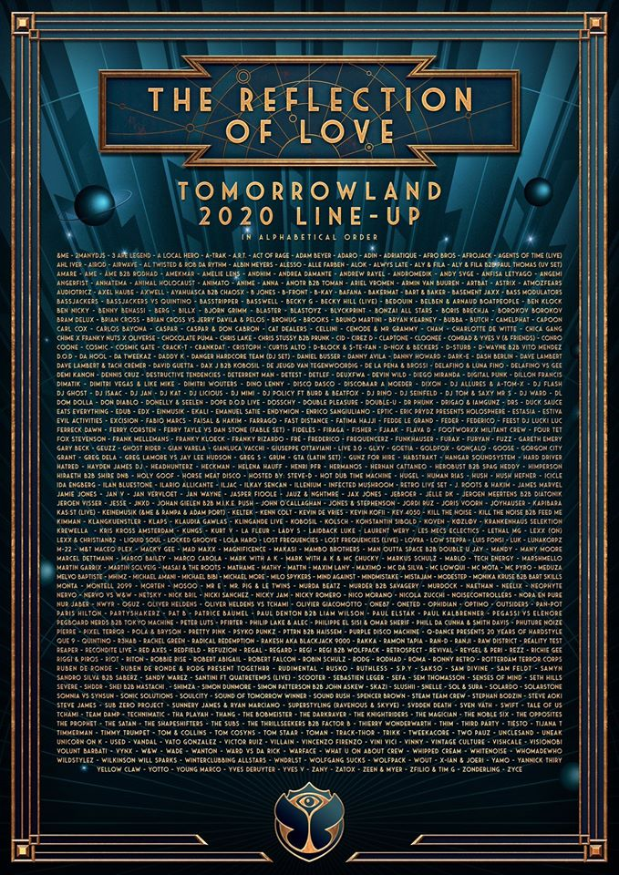

Tomorrowland 2020
Belgium17-19 July 2020 & 24-26 July 2020
Tomorrowland is a EDM and electronic music festival held in Boom, Belgium. Tomorrowland is the world's biggest dance music festival, bringing an A-list lineup of DJs from across the dance music spectrum to Boom in Belgium each summer.
That means whether you're into EDM, house, techno, hardstyle, or all of the above, you'll be surrounded by only the best. Its recent lineups have included The Chainsmokers, Carl Cox, Martin Garrix, Armin van Buuren, Tiësto and many more.
In addition to music, Tomorrowland also has some interesting activities such as dancing, camping, party and more.
Throw in its incredible stage design, production, and quirky surprises, and it's easy to see why Tomorrowland's tickets sell out in record time each year.
Now regarded as a mecca for all dance music fans, immersing yourself into this mythological wonderland has to be high up on every music fan's bucket list.
Headliners

Dimitri Vegas & Like Mike

Helena Hauff
ПОЛНЫЙ СОСТАВ АРТИСТОВ НА TOMORROWLAND 2020!

● &Me ● 2ManyDJs ● 3 Are Legend ● A Local Hero ● A-Trak ● A.R.T. ● Act of Rage ● Adam Beyer ● Adaro ● ADIN ● Adriatique ● Afro Bros ● Afrojack ● Agents Of Time (live) ● Ahl Iver ● Airod ● Airwave ● Al Twisted & Rob Da Rythm ● Albin Meyers ● Alesso ● Alle Farben ● Alok ● Alwys Late ● Aly & Fila ● Aly & Fila b2b Paul Thomas (UV set) ● Amare ● Ame ● Âme b2b Rodhad ● Amekmar ● Amelie Lens ● Andhim ● Andrea Damante ● Andrew Rayel ● Andromedik ● ANDY SVGE ● Anfisa Letyago ● Angemi ● Angerfist ● Anhatema ● Animal Holocaust ● Animato ● AniMe ● ANNA ● ANOTR b2b Toman ● Ariel Vromen ● Armin van Buuren ● Artbat ● Astrix ● Atmozfears ● Audiotricz ● Axel Haube ● Axwell ● Ayahuasca b2b ChaosX
● B Jones ● B-Front ● B-Kay ● Bakermat ● Bart & Baker ● Basement Jaxx ● Bass Modulators ● Bassjackers ● Bassjackers vs Quintino ● Basstripper ● Basswell ● Becky G ● Becky Hill (live) ● Bedouin ● Belben & Arnaud Boatpeople ● Ben Klock ● Ben Nicky ● Benny Benassi ● Berg ● Billx ● Björn Grimm ● Blaster ● Blastoyz ● BLVCKPRINT ● Bonzai All Stars ● Boris Brechja ● Borokov Borokov ● Bram Delux ● Brian Cross ● Brian Cross vs Jerry Davila & Pelos ● Brohug ● Brooks ● Bruno Martini ● Bryan Kearney ● Bubba ● Butch
● Camelphat ● Capoon ● Carl Cox ● Carlos Bayona ● Caspar ● Caspar & Don Cabron ● Cat Dealers ● Cellini ● Cemode & Mr Grammy ● Cham ● Charlotte de Witte ● Chica Gang ● Chime x Franky Nuts x Oliverse ● Chocolate Puma ● Chris Lake ● Chris Stussy b2b Prunk ● CID ● Cirez D ● Claptone ● Cloonee ● Comrad & Yves V (& Friends) ● Conro ● Coone ● COSMIC ● Cosmic Gate ● Crack-T ● Crankdat ● Curtis Alto
● D-Block & S-Te-Fan ● D-Nox & Beckers ● D-Sturb ● D-Wayne b2b Vito Mendez ● D.O.D ● Da Hool ● Da Tweekaz ● Daddy K ● Danger Hardcore Team (DJ Set) ● Daniel Busser ● Danny Avila ● Danny Howard ● Dark-E ● Dash Berlin ● Dave Lambert ● Dave Lambert & Tach Crémer ● David Guetta ● Dax J b2b Kobosil ● De Jeugd Van Tegenwoordig ● De la Pena & Brossi ● Delafino & Luna Fino ● Delafino vs Gee ● Demi Kanon ● Dennis Cruz ● Destructive Tendencies ● Deterrent Man ● Detest ● Detlef ● Deuxfwa ● Devin Wild ● Diego Miranda ● Digital Punk ● Dillon Francis ● Dimatik ● Dimitri Vegas & Like Mike ● Dimitri Wouters ● Dino Lenny ● Disco Dasco ● Discobaar a Moeder ● Dixon ● DJ Allures & A-Tom-X ● DJ Flash ● DJ Ghost ● DJ Isaac ● DJ Jan ● DJ Kat ● DJ Licious ● DJ MIMI ● DJ Policy ft Burd & BeatFox ● DJ Rino ● DJ Seinfeld ● DJ Tom & Saxy Mr S ● DJ Ward ● DL ● Dom Dolla ● Don Diablo ● Donelly & Seelen ● Dope D.O.D live ● Dosschy ● Double Pleasure ● Double-U ● Dr Phunk ● DRIGAO & IAMGUNZ ● DRS ● Duck Sauce
● Eats Everything ● eDUB ● EDX ● Einmusik ● Ekali ● Emanuel Satie ● Endymion ● Enrico Sangiuliano ● Eptic ● Eric Prydz presents HOLOSPHERE ● Estasia ● Estiva ● Evil Activities ● Excision ● Fabio Marcs ● Faisal & Hakim ● Farrago ● Fast Distance ● Fatima Hajji ● Fedde Le Grand ● Feder ● Federico ● Feest DJ Lucki Luc ● Ferreck Dawn ● Ferry Corsten ● Ferry Tayle vs Dan Stone (Fable Set) ● Fideles ● Firaga ● Fisher ● Fjaak ● Flava D ● Footworxx Militant Crew ● Four Tet ● Fox Stevenson ● Frank Mellemans ● Franky Kloeck ● Franky Rizardo ● Fré ● Frederico ● Frequencerz ● Funkhauser ● Furax ● Furyan ● Fuzz ● Gareth Emery ● Gary Beck ● Geuzz ● Ghost Rider ● Gian Varela ● Gianluca Vacchi ● Giuseppe Ottaviani — LIVE 3.0 ● GLXY ● Goetia ● Goldfox ● Gonçalo ● Goose ● Gorgon City ● Grant ● Greg Dela ● Greg Lamore vs Jay Lee Hudson ● Greg S ● Grum ● GTA (Latin set) ● Gunz For Hire ● Habstrakt ● Hangar Soundsystem ● Hard Driver ● Hatred ● Hayden James dj ● Headhunterz ● Heckman ● Helena Hauff ● Henri PFR ● Hermanos ● Hernan Cattaneo ● Herobust b2b Spag Heddy ● Himperson ● Hiraeth b2b Shire DnB ● Holy Goof ● Horse Meat Disco ● Hosted by: Steve-D ● Hot Dub Time Machine ● Hugel ● Human Rias ● Hush ● Hush Hefner ● Icicle ● Ida Engberg ● Ilan Bluestone ● Ilario Allicante ● Iljac ● Ilkay Sencan ● Illenium ● Infected Mushroom – Retro Live Set ● J. Roots & Hakimm ● Jackless & The Fox ● James Marvel ● Jamie Jones ● Jan V ● Jan Vervloet ● Jan Wayne ● Jasper Fioole ● Jauz & NGHTMRE ● Jax Jones ● Jebroer ● Jelle DK ● Jeroen Meertens b2b Diatonik ● Jeroen Visser ● Jesse ● JNXD ● Johan Gielen b2b M.I.K.E. Push ● John O’Callaghan ● Jones & Stephenson ● Joris Voorn ● Joyhauser ● Kapibara ● Kas:st (live) ● Keinemusik (&Me & Rampa & Adam Port) ● KELTEK ● Kenn Colt ● Kevin de Vries ● KEVIN KOFII ● Key 4050 ● Kill The Noise ● Kill The Noise b2b Feed Me ● Kimman ● Klangkuenstler ● Klaps ● Klaudia Gawlas ● Klingande live ● Kobosil ● Kölsch ● Konstantin Sibold ● Koven ● Køzløv ● Krankenhaus Selektion ● Krewella ● Kris Kross Amsterdam ● Kryder ● Kungs ● Kurt V ● La Fleur ● Lady S ● Laidback Luke ● Laurent Wery ● Les Mecs Eclectics ● Lethal MG ● Lexx (on) ● Lexx & Christian82 ● Liquid Soul ● Locked Groove ● Lost Frequencies ● Lost Frequencies (live) ● Lovra ● Low Steppa ● Luk ● LunaKorpz ● M-22 ● M&T ● Maceo Plex ● Macky Gee ● Mad Maxx ● Magnificence ● Makasi ● Mambo Brothers ● Man Outta Space b2b Double U Jay ● MANDY ● Many Moore ● Marcel Dettmann ● Marco Bailey ● Marco Carola ● Mark with a K ● Mark with a K & MC Chucky ● Markus Schulz ● MaRLo — Tech Energy ● Marshmello ● Martin Garrix ● Martin Solveig ● Masai & The Roots ● Mathame ● Mathy ● MATTN ● Maxim Lany ● Maximo ● MC Da Silva ● Mc Lowqui ● Mc Mota ● MC Pyro ● Meduza ● Melvo Baptiste ● Mh!mz ● Michael Amani ● Michael Bibi ● Michael More ● Milo Spykers ● Mind Against ● Mindmistake ● MistaJam ● Modestep ● Monika Kruse b2b Bart Skills ● Monta ● Montell 2099 ● Morten ● Mosoo ● Mr E ● Mr. Pig & Le Twins ● Murda Beatz ● Murdër b2b savagery ● Murdock ● Naethan ● Neelix ● Neophyte ● Nervo ● Nervo vs W&W ● Netsky ● Nick Bril ● Nicki Sanchez ● Nicky Jam ● Nicky Romero ● Nico Morano ● Nicola Zucchi ● Noisecontrollers ● Nora en Pure ● Nur Jaber ● NWYR
● Oguz ● Oliver Heldens ● Oliver Heldens vs Tchami ● Olivier Giacomotto ● One87 ● Oneted ● Ophidian ● Optimo ● Outsiders ● Pan-Pot ● Paris Hilton ● Partyshakerz ● Pat B ● Patrice Baumel ● Paul Denton b2b Liam Wilson ● Paul Elstak ● Paul Kalbrenner ● Pegassi vs Elenore ● Pegboard Nerds b2b Tokyo Machine ● Peter Luts ● Pfirter ● Philip Lake & Alec ● Philippe El Sisi & Omar Sherif ● Phill Da Cunha & Smith Davis ● Phuture Noize ● Pierre ● Pixel Terror ● Pola & Bryson ● Pretty Pink ● Psyko Punkz ● PTTRN b2b Haissem ● Purple Disco Machine ● Q-dance presents 20 Years of Hardstyle ● Que 9 ● Quintino ● R3hab ● Rachel Green ● Radical Redemption ● Rakesh aka Blackjack 9000 ● RAKKA ● Ramon Tapia ● Ran-D ● Ranji ● Raw District ● Reality Test ● Reaper ● Recondite live ● Red Axes ● Redfield ● Refuzion ● Regal ● Regard ● Regi ● Regi b2b Wolfpack ● Retrospect ● Revival ● Reygel & Peri ● Rezz ● Richie Gee ● Riggi & Piros ● Riot ● Riton ● Robbie Rise ● Robert Abigail ● Robert Falcon ● Robin Schulz ● Rodg ● Rodhad ● Roma ● Ronny Retro ● Rotterdam Terror Corps ● Ruben de Ronde ● Ruben de Ronde & Rodg present TogethRR ● Rudimental ● Rusko ● Ruthless ● S.P.Y ● Sakso ● Sam Divine ● Sam Feldt ● Samyn ● Sandro Silva b2b SaberZ ● Sandy Warez ● Santini ft Quatretemps (live) ● Scooter ● Sebastien Leger ● Sefa ● Sem Thomasson ● Senses of Mind ● Seth Hills ● Severe ● SHDDR ● Shei b2b Mastachi . ● Shimza ● Simon Dunmore ● Simon Patterson B2B John Askew ● Skazi ● Slushii ● Snelle ● Sol & Sura ● Solardo ● Solarstone ● Somnia vs Synsun ● Sonic Solutions ● Soulcity ● Sound Of Tomorrow winner ● Sound Rush ● Spencer Brown ● Steam Team Crew ● Stephan Bodzin ● Steve Aoki ● Steve James ● Sub Zero Project ● Sunnery James & Ryan Marciano ● Superstyling (Ravenous & Skyve) ● SVDDEN DEATH ● Sven Väth ● Swift ● Tale Of Us ● Tchami ● Team DAMP ● Technimatic ● Tha Playah ● Thang ● The Bobmeister ● The Darkraver ● The Knightriders ● The Magician ● The Noble Six ● The Opposites ● The Prophet ● The Satan ● The Shapeshifters ● The Subs ● The Thrillseekers b2b Factor B ● Thierry Wonderwarth ● Thim ● Tiësto ● Tijana T ● Timmerman ● Timmy Trumpet ● Tom & Collins ● Tom Cosyns ● Toman ● Track-Thor ● Trikk ● Tweekacore ● Two Pauz ● Unclesand ● UNEAK ● Unicorn on K ● Used ● Vandal ● Vato Gonzalez ● Victor Ruiz ● Villain ● Vincenzo Firenzo ● Vini Vici ● Vinny ● Vintage Culture ● Vishcale ● Visionobi ● Volunt Barbati ● Vynx ● W&W ● Wade ● Wanton ● Ward vs Da Rick ● Warface ● What u on about crew ● Whipped Cream ● Whiteno1se ● WhoMadeWho ● Wildstylez ● Wilkinson ● Will Sparks ● Winterclubbing Allstars ● Wndrlst ● Wolfgang Sucks ● Wolfpack ● Wout ● X-Ian & Joeri ● Yamo ● Yannick Thiry ● Yellow Claw ● Young Marco ● Yves Deruyter ● Yves V ● Zany ● Zatox ● Zeen & Myer ● Zfilio & Tim G ● Zonderling ● Zyce